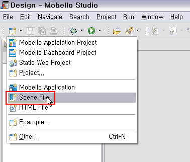
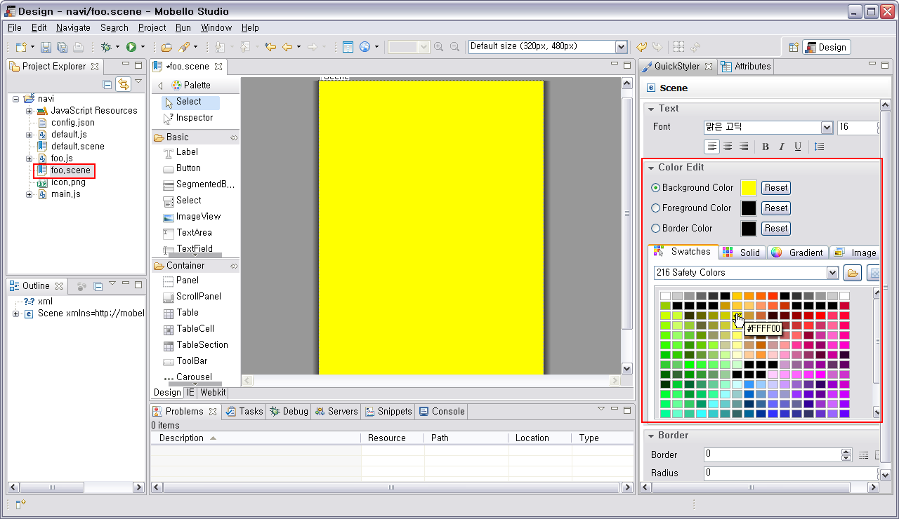
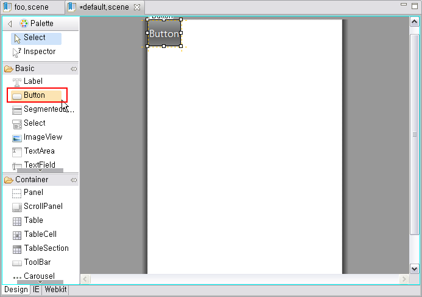
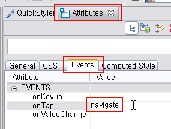
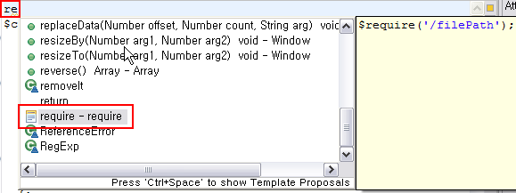
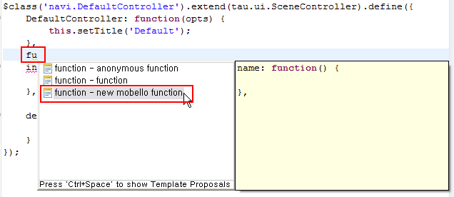
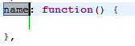
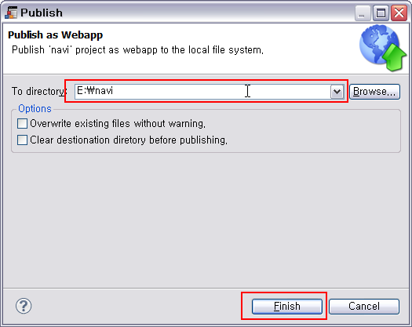
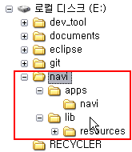
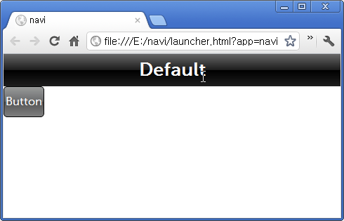

툴바에서 Mobello Application Project 위자드 를 띄우고 프로젝트 이름으로 'navi' 을 입력한 다음 Next 를 선택합니다.

위자드 의 Templates 화면에서 Navigation based 를 선택하고 Finish 를 선택합니다.

이 가이드에서는 Mobello Studio 를 사용해서 Navigation based App 을 만들고 publish 하는 방법을 설명합니다. Mobello Studio 의 기본적인 사용법은 Mobello Studio 처음 시작하기를 참조하시기 바랍니다.
툴바에서 Mobello Application Project 위자드 를 띄우고 프로젝트 이름으로 'navi' 을 입력한 다음 Next 를 선택합니다.
위자드 의 Templates 화면에서 Navigation based 를 선택하고 Finish 를 선택합니다.
화면을 정의하는 새로운 scene 을 추가하기 위해서 툴바에서 Scene File 위자드 를 선택합니다.

File name 으로 'foo' 를 입력하고 Finish 를 선택합니다.

생성된 foo.scene 은 자동으로 scene designer 를 통해 열리게 됩니다.
오른쪽 QuickStyler 의 Color Edit 에서 scene 의 background color 를 변경해 봅니다.

Project Explorer 에서 default.scene 을 더블 클릭해 scene designer 를 통해 열고 Palette 에서 Button 을 더블 클릭해 배치합니다.

Button 이 선택된 상태에서 Attributes 뷰 에서 Events 탭을 선택하고 onTap 값으로 navigate 를 입력 합니다. 이제 button 을 tap 하면 navigate function 이 실행됩니다.

Project Explorer 에서 default.js 를 더블 클릭해서 javascript editor 를 엽니다.

default.js 의 첫번째 빈 라인에 're' 을 입력하고 Ctrl+Space 를 누른 다음 require 를 선택합니다.

생성된 $require('/'); 안에 다음과 같이 foo.js 를 입력합니다. 이제 default.js 에서 foo.scene 에 대한 controller 인 FooController 를 호출할 수 있게 됩니다.

init function 이전 라인에 커서를 두고 'fu' 라고 입력한 다음 Ctrl+Space 를 누릅니다. 여기서는 new mobello function 을 선택합니다.


생성된 function 의 name 을 navigate 로 변경합니다.

navigate function 의 내용에는 다음 코드를 복사해서 넣습니다. 이제 navigate 를 호출되면 foo.scene 으로 현재 화면이 전환 됩니다.
<pre class="prettyPrint">
var fooCtrl = new navi.FooController(); // foo.scene 에 대한 Controller 인 navi.FooController 의 개체 생성합니다.
this.getParent().pushController(fooCtrl); // parent controller 에 FooController 개체를 push 합니다.
</pre>
툴바의 Run 버튼을 눌러 에뮬레이터에서 실행해 봅니다. default.scene 의 버튼을 누르면 다음과 같이 foo.scene 으로 전환됩니다.

방금 만든 app을 브라우저에서 바로 실행 하기 위해서는 publish 를 수행해야 합니다.
Project Explorer 에서 'navi' 프로젝트를 마우스 오른쪽 버튼으로 선택합니다. 이때 나오는 메뉴 항목에서 Publish as Webapp... 을 선택합니다.

To directory 항목에 publish 할 경로를 지정하고 Finish 를 선택합니다.

Publish 가 완료되고 윈도우즈 탐색기(또는 MacOS 의 파인더) 에서 publish 한 폴더를 살펴보면 다음과 같은 구조로 파일과 폴더가 생성된 것을 확인할 수 있습니다.
 
생성된 파일 중 navi.html 을 크롬 브라우저(또는 사파리) 에서 실행해 볼 수 있습니다.
